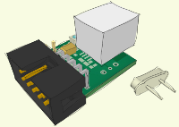

Ein angeschlossenes Ger?t (Dies muss nicht zwingend ein USB AVR Lab sein)
funktioniert nicht richtig, m?glicherweise haben Sie den Quarz noch nichtauf das USB AVR Lab gel?tet?

Wenn das USB AVR Lab in Ordnung sein sollte, k?nnen Sie es mit dem Pinzettentrick wie er auch in der Produktinformation beschrieben ist in den Bootmodus zwingen.